대형 크롤러
-
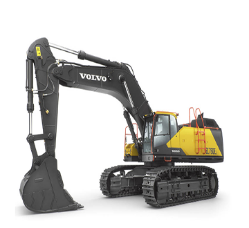
VOLVO EC750E
· 운전 중량 / 73,500 - 75,300 kg
· 총 출력 / 385 kW
· 3.3 - 5.16 m³
모든 용도에서 높은 용량의 작업을 처리할 수 있습니다.
-
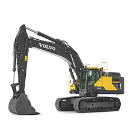
VOLVO EC480E
· 운전 중량 / 45,500 - 53,300 kg
· 총 출력 / 278 kW
· 버켓 용량 / 1.55 - 3.3 m³
-
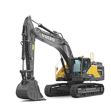
VOLVO EC380E
· 운전 중량 / 37,800 - 43,000 kg
· 총 출력 / 226 kW
· 버켓 용량 / 0.83 - 2.53 m³
-
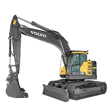
VOLVO ECR355E
· 운전 중량 / 34,100 - 38,000 kg
· 총 출력 / 180 kW
· 버켓 용량 / 0.92 - 2.06 m³
볼보 대형 크롤러 굴삭기를 선택하는 이유
· 탁월한 편안함 및 제어성
· 강력하면서도 높은 연료 효율
· 강력함 및 내구성
중형 크롤러
-
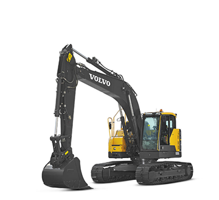
VOLVO ECR235E
· 운전 중량 / 23,700 - 27,840 kg
· 총 출력 / 129 kW
· 0.36 - 1.44 m³
ECR235E 크롤러 굴삭기는 콤팩트 디자인을 적용하여
선회 반경이 짧아 좁은 공간에서도
성능을 저하시키지 않고 작업할 수 있습니다. -
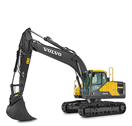
VOLVO EC220E
· 운전 중량 / 20,470 - 25,760 kg
· 총 출력 / 129 kW
· 0.48 - 1.44 m³
-
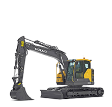
VOLVO ECR145E
· 운전 중량 / 14,435 - 16,677 kg
· 총 출력 / 90 kW
· 0.25 - 0.82 m³
-
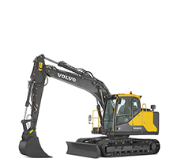
VOLVO EC140E
· 운전 중량 / 13,170 - 16,980 kg
· 총 출력 / 90 kW
· 0.33 - 1.01 m³
볼보 중형 크롤러 굴삭기를 선택하는 이유
· 입증된 낮은 연료 소비량
· 세계 수준의 Volvo Care Cab
· 매끄러운 성능 및 제어성
소형 굴삭기
-
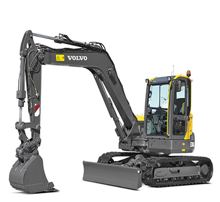
VOLVO ECR88D
· 운전 중량 / 8,600 - 9,500 kg
· 총 출력 / 41 kW
· 0.08 - 0.33 m³
ECR88D 소형 굴삭기는 장애물에 가까운 곳에서도
안전하게 작업할 수 있도록하여
더 많은 작업 현장에 접근성을 제공할 것입니다. -
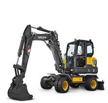
VOLVO EW60E
· 운전 중량 / 5,820 - 5,850 kg
· 총 출력 / 47.3 kW
· 0.07 - 0.27 m³
-
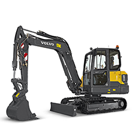
VOLVO EC60E
· 운전 중량 / 5,760 - 7,000 kg
· 총 출력 / 44.3 kW
· 0.07 - 0.27 m³
-
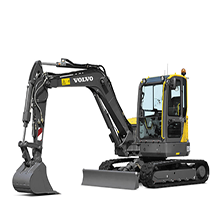
VOLVO ECR58D
· 운전 중량 / 5,700 - 7,000 kg
· 총 출력 / 36.5 kW
· 0.08 - 0.24 m³
볼보 소형 크롤러 굴삭기를 선택하는 이유
· 안전성 및 작동 용이성
· 빼어난 인양 능력
· 간편한 서비스 및 유지관리